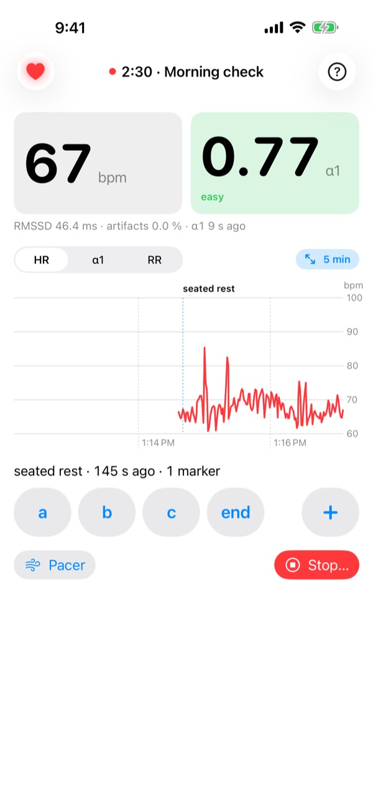
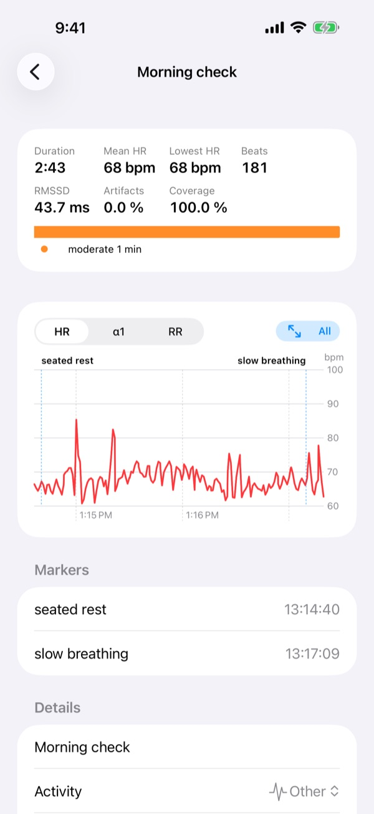
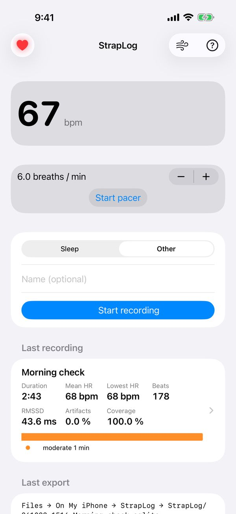
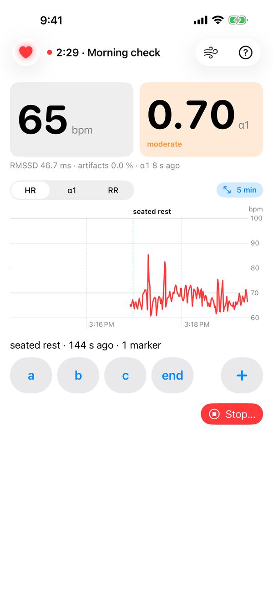
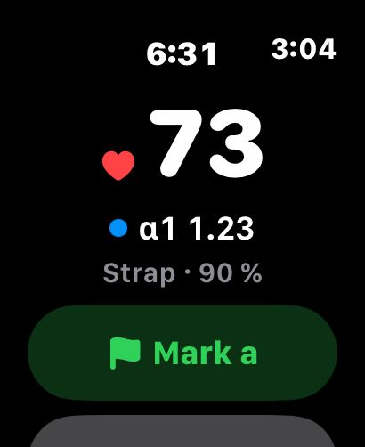
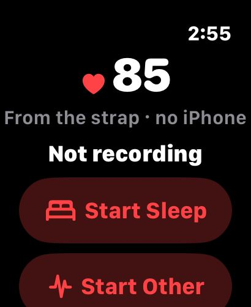
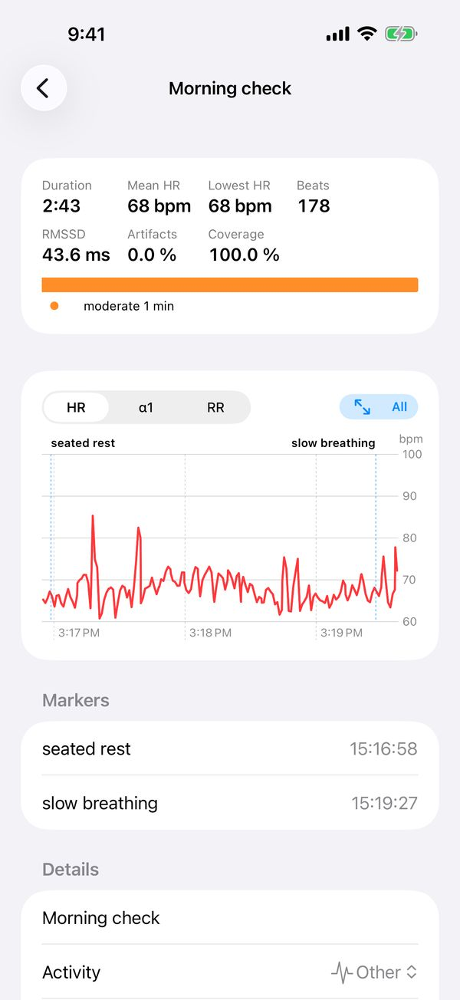
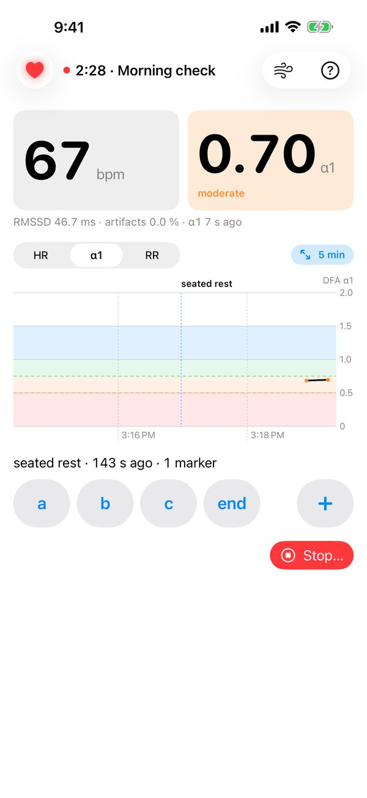
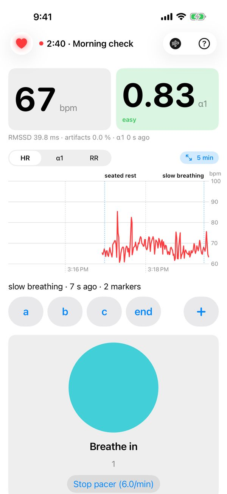

StrapLog HRV
Every heartbeat from your chest strap, in a file you own.
StrapLog records beat-by-beat RR intervals from a Polar H10 (or any H10-compatible strap) on your iPhone — overnight, on a walk, on the bike — and saves each recording as one SQLite file in your iCloud Drive. Live heart rate, RMSSD and DFA α1 while you record; markers from the app, Lock Screen, Apple Watch or Siri; and no account, server or analytics. Apple's privacy label for StrapLog reads Data Not Collected.
Get StrapLog on the App Store $0.99 · iPhone (iOS 18+) · Apple Watch optional


What you need: an iPhone and a Polar H10-compatible strap (about $90). Watches and wrist sensors do not connect; that is the point — a strap reads the heart's electrical signal to about a millisecond, which optical sensors cannot.
StrapLog is a personal measurement tool, not a medical device.
Why a recorder and not another HRV app
Most HRV apps sell you a score. StrapLog records the evidence and leaves the interpretation to tools you can inspect and improve: a Python package and a set of open-source Claude skills that read the files directly. Analysis built into an app is frozen on the day it ships; analysis that lives in your own tools gets better every month without an app update.
The app's job is narrow and it does it carefully: keep recording with the phone locked, survive Bluetooth drops and relaunches, write files that are never half-written, and tell you honestly how much of the night it actually heard (coverage).
Your files
Every recording is one file in Files → iCloud Drive → StrapLog (or On My iPhone → StrapLog without iCloud), named by start time and name, e.g. 261016-2304-sleep_2026-10-16.sqlite. On a Mac the same folder is
~/Library/Mobile Documents/iCloud~com~personalscience~straplog/Documents/Beside the recordings sits index.json, a list of every recording with start time, duration, beat count, coverage and marker labels — so a script or an agent can find the right night by reading one file.
Inside each file are tables for recording, beat (every RR interval as the strap sent it, in 1/1024 s, plus ms and an estimated time), event (markers, connects and disconnects, pacer, posture), motion (the strap's accelerometer, once per second), notification and meta. Times are Unix epoch milliseconds UTC, with the recording's time-zone offset stored alongside. Files are written as single-file snapshots (VACUUM INTO), so you never see -wal or -shm companions and never read a partial file.
Full schema: docs/SCHEMA.md. Any SQLite tool opens the files: DB Browser for SQLite, sqlite3, Python, R.
Analyze it
Python. pip install straplog (or uv add straplog). The straplog command lists your recordings and prints RR intervals, events and metadata as CSV or JSON; the package also carries the HRV algorithms the skills use (artifact filter, RMSSD, DFA α1).
straplog ls --json # every recording in the iCloud folder
straplog rr <file.sqlite> # RR intervals as CSV
straplog events <file.sqlite> --markersClaude skills. The straplog-skills plugin gives Claude Code the analyses I use myself:
| Skill | Question it answers |
|---|---|
hrv-overnight | How was the night? RMSSD and SDNN trajectory in blocks, Bluetooth coverage gaps, reconciled against Apple Watch sleep staging |
hrv-resting | Today's resting HRV — RMSSD, LnRMSSD, SDNN, pNN50 — logged with a rolling 7-day baseline |
h10-session | A workout: heart-rate zones, DFA α1, cardiac drift, per-set peaks and recovery for lifts, optional GPX/FIT overlay |
hrv-ramp-test | Aerobic and anaerobic thresholds (α1 = 0.75 and 0.50) from a graded ramp, and your training zones |
h10 | Routes any recording to the right skill by activity |
Install in Claude Code (needs uv):
/plugin marketplace add personalscience/straplog-skills
/plugin install straplog-skills@personalscienceThen, with the iCloud folder in reach, ask: “How did I sleep last night?”
Both the package and the skills are MIT-licensed on GitHub: personalscience/straplog-py and personalscience/straplog-skills. The app's source is at personalscience/StrapLog.
No shell? On a recording's page in the app, Share export sends the file anywhere.
One experiment a month
I write Personal Science, a newsletter on measuring yourself with tools you control. Each StrapLog experiment — a protocol, what to record, what a null result looks like — goes out there first.
Subscribe Free. No other mail.
Guide
The manual that ships inside the app (tap ? on Home).
Getting started
What you need
- An iPhone, and a chest strap that StrapLog supports. StrapLog requires a Polar H10-compatible heart-rate sensor. Watches and wrist sensors do not connect.
- Optionally, an Apple Watch to see the recording and add markers from your wrist.
Put the strap on
- Wet the electrodes (the textured pads on the inside of the strap) with water.
- Snap the sensor onto the strap and fasten it around your chest, just below the chest muscles, snug but comfortable.
- The sensor wakes up when it touches skin. It sleeps again when you take it off, so there is no switch.
First launch
When StrapLog opens for the first time, iOS asks for permission to use Bluetooth. Allow it, or StrapLog cannot hear the strap.
StrapLog then looks for a strap nearby. The heart at the top left of the screen shows what is happening:
- Grey and pulsing: searching.
- Red and glowing: connected. Your heart rate appears within a few seconds.
- Orange and broken: the strap disconnected or Bluetooth is off. StrapLog keeps trying.
The first strap StrapLog connects to becomes your strap. From then on it only connects to that one, so a partner's strap in the same room will not get mixed up with yours. (To switch to a different strap, see Troubleshooting.)
When you start your first recording, iOS also asks whether StrapLog may send notifications. Allow them if you want an alert when the strap stops sending beats (see Alerts and gaps).
Your first recording
- Put the strap on and wait for the red heart.
- On Home, choose Other, and tap Start.
- Sit still for a few minutes and watch the numbers fill in. Heart rate shows at once; the HRV numbers need about 2 minutes of beats.
- Tap Stop… and confirm. StrapLog saves the recording and writes its file.

That's it. The chapters below explain everything else.
Recording
Choosing an activity
Home offers two activities. StrapLog remembers the one you used last.
| Activity | Use it for | What's different |
|---|---|---|
| Sleep | Overnight recordings | Can stop itself at your wake time. Never sends link alerts. Marker buttons: lights out, awake, up. |
| Other | Everything else: rest, exercise, breathing practice | Marker buttons: a, b, c, end. |
You can give the recording a name, or leave it blank and StrapLog names it after the activity and the date ("sleep 2026-10-16"). You can rename it later.
You can start a recording before the strap connects. Beats are saved from the moment it does.
The recording screen

The title shows a red dot, the elapsed time and the recording's name.
Heart rate (bpm), left tile. The strap's own beats-per-minute reading, sent about once a second. The strap smooths it, so it lags sudden changes by a few seconds. A warning appears under it when the strap loses skin contact.
DFA α1, right tile. The latest α1 (see DFA α1 and training zones), refreshed every 20 seconds. The tile takes the colour of its intensity band, so a glance tells you how hard you are working. Until there are 2 minutes of beats it reads "First α1 after 2 min of beats".
The line beneath shows the latest RMSSD, the artifact % and how long ago α1 was computed. If that age keeps growing, too few clean beats are arriving.
The chart. Pick HR, α1 or RR. The chart follows the newest beats.
- Pinch to zoom out (1, 2, 5, 15, 30, 60 min, or the whole recording) or in.
- Drag sideways to look back through the recording. A Live button appears; tap it to return to now.
- Double-tap to go back to 5 minutes, or tap the span chip to pick one.
- The α1 view shades the intensity bands and draws the 0.75 and 0.50 lines.
- Markers appear as labelled dashed lines.
Markers sit below the chart (see Markers). The wind button at the top opens the breathing pacer (see Paced breathing).
In landscape, the numbers sit on the left and the chart fills the right.
Stopping
Tap Stop… and confirm. StrapLog closes the recording, writes its file and shows a summary on Home.
You can also stop from the Lock Screen, the Apple Watch, Siri or Shortcuts. A Sleep recording can stop itself (see Sleep recordings).
If the app is closed
You do not need to keep StrapLog on screen. Lock the phone or switch apps and it keeps recording in the background.
If iOS or you close StrapLog during a recording, it picks the same recording up again the next time it opens. A recording left untouched for more than 6 hours is closed instead.
While recording, StrapLog rewrites the recording's file every 30 minutes and whenever it goes into the background, so even an unexpected shutdown loses very little.
Sleep recordings
Choose Sleep on Home before bed. Two extra settings appear:
- Stop at wake time (on by default).
- Wake at: the time to stop (06:30 unless you change it).
How a Sleep recording ends
StrapLog uses the strap's motion sensor to tell lying down from sitting or standing up. A change of posture only counts once you have held it for a minute.
- At your wake time, if you are still lying down, StrapLog marks resting start and records 5 more minutes. Stay still for those minutes: they give you a clean morning resting reading. Then it stops.
- At your wake time, if you are already up, it stops at once.
- Once you have been upright for 10 minutes after lying down, it stops, whatever the time. Sitting up in bed before you have lain down does not count.
While a Sleep recording runs, the heart-rate tile adds two lines, for example "Low 46 at 03:40" and "5 h 12 min": the night's lowest heart rate so far (the same 2-minute average as Lowest HR in the summary), when it happened, and how long you have been recording. A low late in the night often follows a late meal, alcohol, a hard evening workout or stress.
The recording screen spells out the plan, for example "5 min resting at 06:30, then stops; or after 10 min upright". Turn Stop at wake time off and only the 10-minutes-upright rule applies.
Overnight tips
- Keep the phone near the bed, within a few metres. Distance and walls cause gaps.
- Plug the phone in. An all-night Bluetooth link uses a little battery.
- Wet the electrodes before bed and wear the strap snug. A loose strap loses contact when you roll over.
- Sleep recordings never send link alerts, so a lost connection won't wake you. Check the summary's coverage in the morning instead.
To start a Sleep recording automatically at bedtime, see Shortcuts and Siri.
Markers
A marker stamps the current moment with a label: "lying down", "start stage 3", "coffee". Markers are saved with the recording, so you can later compare the parts of a session (before vs. after, rest vs. exercise). They never change any measurement.
- Tap a marker button (a, b, c, end for Other; lights out, awake, up for Sleep) to add it now. The phone gives a tap of feedback and the line below shows what was marked and when.
- Tap + to type a note instead. Notes you have used before are offered again for one-tap reuse.
- Long-press the marker row and choose Edit markers… to add, rename, delete or reorder the buttons. Each activity keeps its own set. Changes apply at once, even mid-recording. Restore … defaults brings back the original set.
You can also add markers from the Lock Screen, the Dynamic Island, the Apple Watch and Siri.
Lock Screen and Dynamic Island
While recording, StrapLog shows a Live Activity on the Lock Screen and in the Dynamic Island:
- The recording's name and a running timer.
- Heart rate, α1 (coloured by band) and RMSSD.
- A status line: the strap and its battery, or a problem such as "No skin contact", "No beats" or "Reconnecting…" in orange.
- Buttons for your first three markers, and Stop.
The Lock Screen Stop button stops at once, without asking. Use it with care.
The Live Activity updates every 10 seconds or so, and immediately for markers and link changes. If it says "No update for over a minute — open StrapLog", iOS has paused the app; opening it catches up. iOS ends a Live Activity after 8 hours; StrapLog starts a fresh one with the next update.
If you see no Live Activity, check that Settings → StrapLog → Live Activities is on.
Apple Watch
The Watch app is a remote display and control for the recording on your iPhone. The iPhone does all the recording; the Watch never stores beats.
The Watch app
- Not recording: buttons to Start Sleep and Start Other. A Sleep start uses the wake time set on the iPhone.
- Recording: the timer, your heart rate and α1, the status line, every marker button and Stop (which asks first).

- Mark next (the green button) steps through your marker buttons in order, then repeats the last one. It suits a workout with several stages.
- If the iPhone is out of reach, a command waits and is sent when it comes back ("Waiting for iPhone…"). You can cancel it.
The Watch taps your wrist when a command is sent, and buzzes twice if the strap stops sending beats while the app is on screen.
The Action button and Siri on the Watch
The Next Marker action adds the next marker from the Watch. Assign it to the Apple Watch Ultra's Action button, or say "Mark next in StrapLog".
When the iPhone is out of reach
If the Watch app is on screen and the iPhone has gone quiet (out of range, or left in another room), the Watch listens to the strap directly and shows its heart rate with the caption "no iPhone". This is heart rate only: no α1 and nothing is saved. It switches back as soon as the iPhone reports again. The first time, the Watch asks for Bluetooth permission.

Complications
Add StrapLog to a watch face (circular, corner, rectangular or inline). While recording it shows a heart and your heart rate or the elapsed time, or an orange warning if the strap has a problem. When idle it reads "Not recording". Tap it to open the Watch app.
To save battery, the complication updates only now and then (at start, stop, link changes and about hourly). The heart rate it shows can be up to 20 minutes old and disappears after that; open the app for the live number.
Keep StrapLog on screen
By default the Watch goes back to the clock face 2 minutes after you lower your wrist. To keep StrapLog up during a workout or a long session, on the Watch open Settings › General › Return to Clock, scroll to StrapLog, turn on Custom and choose After 1 hour (or Always).
With the wrist down, on a Watch with Always On, StrapLog stays on screen dimmed: just your heart rate, a heart (or an orange warning if the strap has a problem) and how many markers you have added. It updates about once a minute in that state, which costs little battery; raise your wrist for the full screen and the live number.
If the Watch has gone back to the clock anyway, the complication is the quickest way back: tap it.
Alerts and gaps
Link alerts
During a recording that isn't Sleep, StrapLog sends a notification when beats stop arriving:
- the strap disconnected,
- the strap lost skin contact, or
- the strap is connected but has sent no beats for 10 seconds.
You get one alert when the problem starts, not a stream of them, and it disappears once beats come back. The alert is time-sensitive: it can break through a Focus if you allow time-sensitive notifications for StrapLog. If your iPhone is locked, it also reaches your Apple Watch.
Gaps and coverage
Beats that happen while the strap is out of touch are lost; the strap does not keep them for later. StrapLog keeps the recording open through any disconnect and carries on when the strap returns.
The summary's Coverage is the share of the recording that had heart data. Any silence longer than 3 seconds counts as a gap. A few short gaps overnight are normal. Long gaps mean stretches with no data, and analysis skips the windows they fall in.
The strap sheet
Tap the heart at the top left for details:
- Link, Device ID, Firmware, Serial, Battery. What the strap reports about itself. Replace its coin-cell battery when it reads below about 20 %. A weak battery is the most common cause of dropouts.
- Contact. Whether the electrodes touch skin. Poor contact means noisy or missing beats: wet the electrodes and tighten the strap.
- Beats (while recording). How many heartbeats have been saved. At rest this grows by about your heart rate each minute. If it stalls while heart rate keeps updating, the strap is not sending beats: check contact.
- Since last notification. Seconds since the strap last reported. Normally under 1.5 s; a climbing number means the link has dropped.
- Longest gap. The longest silence in this recording.
- Last export. Where the latest file was written.
- Use a Different Strap. Forgets your strap and connects to the next one StrapLog finds. Take the old strap off first. Not available while recording.
Your recordings
Home lists every recording with its name, local start time, duration and beat count. open means it is still recording.
After you stop, a Last recording card sums up the session:
- Duration, Mean HR and RMSSD over the whole recording, after artifact removal.
- Lowest HR: the lowest 2-minute average. For a night, this is your sleeping low. The 2-minute average means one missed beat cannot fake a low.
- Beats, and Artifacts: the share of beats removed as suspect.
- Coverage: the share of the recording that had heart data.
- Minutes per α1 band.
Tap the card or any row to open the recording: its summary, a chart of the whole session (pinch to zoom, drag to pan), the markers with their clock times and the strap's battery at start and end. Tap a marker to centre the chart on it.
You can change the name, activity and notes there. Saving renames the file to match.

Swipe a row left to delete a recording. This removes it from the iPhone and deletes its file from iCloud Drive, so share or copy the file first if you want to keep it.
Analyzing your recordings
StrapLog's numbers on screen are a live view. The real product is the file each recording leaves behind: every beat, marker and posture change, in a format any tool can read (see Exports and your data). Ready-made analyses read those files directly.
Claude skills. Five open-source skills for Claude Code turn a recording into a report:
- hrv-overnight: how the night went. RMSSD and SDNN in blocks through the night, Bluetooth gaps, and Apple Watch sleep stages alongside.
- hrv-resting: today's resting HRV (RMSSD, LnRMSSD, SDNN, pNN50), logged against your rolling 7-day baseline.
- h10-session: a workout. Heart-rate zones, DFA α1, cardiac drift, and per-set peaks and recovery for strength sessions.
- hrv-ramp-test: your aerobic and anaerobic thresholds (α1 0.75 and 0.50) from a graded ramp, and the training zones they give.
- h10: picks the right skill for a recording by its activity.
To install them, run these two commands in Claude Code on a Mac (it also needs uv, from docs.astral.sh/uv):
/plugin marketplace add personalscience/straplog-skills/plugin install straplog-skills@personalscience
In the app, Copy install command on the guide's contents page copies both lines. Then, with iCloud Drive on the Mac, ask Claude "How did I sleep last night?"
Python. The straplog package (pip install straplog) lists your recordings and prints beats, events and metadata as CSV or JSON, with the same HRV algorithms the skills use.
The skills, the package and StrapLog itself are open source; personalscience.com/docs/straplog links to all three.
Exports and your data
Where the files go
Every recording is saved as one file in Files → iCloud Drive → StrapLog, or in Files → On My iPhone → StrapLog if iCloud Drive is off. The exact location appears under Last export.
Files are named by start time and name, like 261016-2304-sleep_2026-10-16.sqlite. The folder also holds an index.json listing every recording.
On a recording's page, Share export sends the file anywhere (AirDrop, Mail, Messages), and Export again rewrites it if it went missing.
Opening the files elsewhere
Each file is a standard SQLite database holding one recording, so any SQLite tool opens it: DB Browser for SQLite, the sqlite3 command line, Python, R or a spreadsheet add-in. Inside:
- recording: name, activity, start and stop, strap details.
- beat: every heartbeat interval, as the strap sent it (in 1/1024 s) and in milliseconds, with an estimated time.
- event: markers, connection changes, pacer use and posture.
- motion: the strap's motion sensor, summarised once per second.
- notification: each report the strap sent.
- meta: the file format and version.
All times are stored in UTC (milliseconds since 1970), with your time-zone offset saved for each recording. A beat's time is an estimate, because the strap does not time-stamp beats: StrapLog infers it from when the phone received each beat.
Reinstalling
Your recordings live in two places: the app's own database, and the files above. If you delete and reinstall StrapLog, it reads the files back in when it opens, and your recordings reappear on Home. Files that iCloud has moved off the phone come back a little later, once they have downloaded.
Files in On My iPhone are deleted along with the app. If iCloud Drive is off, copy the StrapLog folder somewhere safe before you delete the app.
Shortcuts and Siri
StrapLog's actions work from Siri, the Shortcuts app and the iPhone's Action button, without opening the app:
- Start Recording: choose the activity, and optionally a name. "Start Sleep recording in StrapLog." If a recording is already open, it keeps running.
- Stop Recording: "Stop StrapLog." Stops and writes the file.
- Add Marker: "Mark StrapLog." Siri asks what happened. If you say the name of a marker button it is stored as that marker, otherwise as a note.
A Sleep start uses the wake time set on Home.
Start recording automatically at bedtime
- Open Shortcuts → Automation → New Automation → Sleep (or Focus → Sleep).
- Choose When Turning On, then Run Immediately.
- Add the StrapLog action Start Recording and set Activity to Sleep.
Put the strap on before Sleep Focus turns on, so the night's first beats are caught.
What the numbers mean
RR interval (ms)
The time from one heartbeat to the next, in milliseconds. This is the raw material for everything else. 1000 ms between beats is 60 bpm; 500 ms is 120 bpm (bpm = 60 000 ÷ RR).
The RR chart (a tachogram) plots it over time. Up means slower beats, down means faster. At rest it rises and falls with your breathing: beats speed up as you breathe in and slow down as you breathe out. Big, smooth waves are typical of a relaxed state. A flat line means little variability, which is normal during hard exercise.
A chest strap measures RR from the heart's electrical signal, accurate to about a millisecond. Optical wrist sensors can't match that, which is why StrapLog uses a strap.
Artifacts and artifact %
Not every reported beat is real. A missed beat shows up as one interval twice as long as usual. An extra beat shows up as a short interval followed by a long one. Movement and poor contact add more. StrapLog removes suspect beats before computing anything:
- It discards any interval shorter than 300 ms (above 200 bpm) or longer than 2000 ms (below 30 bpm).
- It compares each beat with the median of its five-beat neighbourhood and drops any beat more than 25 % away from it, repeating up to three times.
Artifact % is the share of beats removed.
| Artifact % | Meaning |
|---|---|
| under 2 % | Clean. Trust every number. |
| 2–5 % | Fine for RMSSD and heart rate. Treat DFA α1 with care. |
| over 5 % | Fix the strap before reading anything into DFA α1. RMSSD may read high. |
Occasional extra beats are common, but they inflate HRV. That is why the cleaning matters.
Analysis windows
The HRV numbers are computed over a 2-minute window. In the saved analysis it moves forward every 60 seconds; on screen, α1 steps every 20 seconds over the same 2 minutes. Each window is cleaned on its own and needs at least 60 beats, or it is skipped (shown as "--"). So:
- The first value appears about 2 minutes after you start.
- Every value describes the last 2 minutes, not this instant. After a change in effort or posture, wait 2–3 minutes before reading the new level.
Heart rate
The live tile shows the strap's own reading. The summary and the analysis use the average over cleaned beats (60 000 ÷ mean RR), which is steadier.
RMSSD (ms)
Root mean square of successive differences: how much each beat's interval differs from the one before, averaged over the window. It reflects fast, beat-to-beat changes driven mainly by the "rest and digest" (parasympathetic) side of the nervous system.
- Higher than your normal usually goes with being rested and relaxed.
- Lower than your normal often follows hard training, short sleep, alcohol, travel or stress.
- Resting values vary widely between people and fall with age. Another person's number tells you nothing about yours. Compare against your own baseline.
- Measure under the same conditions each time, for example on waking, lying still, after 1–2 minutes of settling. Posture, breathing, talking and caffeine all move it.
- During exercise RMSSD drops to a few ms. That is expected and says little. Watch α1 instead.
LnRMSSD
The natural logarithm of RMSSD. A jump from 80 to 100 ms means less than a jump from 20 to 40, and taking the log evens this out, so averages and day-to-day comparisons behave better. Many HRV apps track this form (some show it × 20).
| RMSSD | LnRMSSD |
|---|---|
| 20 ms | 3.0 |
| 33 ms | 3.5 |
| 55 ms | 4.0 |
| 90 ms | 4.5 |
How to use it: keep a rolling 7-day average of your morning value. A single low day means little. Several days in a row well below your usual range are worth noticing.
SDNN (ms)
Standard deviation of all RR intervals in the window: total variability, fast (breathing) and slow (posture shifts, slower body rhythms).
- It depends heavily on recording length. A 2-minute SDNN is not comparable to a 24-hour or overnight SDNN from other devices. Compare like with like.
- Slow, deep breathing raises SDNN sharply, which makes it a good gauge during paced breathing.
Motion and posture
The strap's motion sensor is summarised once per second and saved with the recording. It shows when you were still and when you moved or turned over. StrapLog uses it to tell lying from upright for Sleep recordings. It isn't shown on screen; it's in the exported file.
DFA α1 and training zones
DFA α1 (detrended fluctuation analysis, short-term exponent) measures the pattern of variation rather than its size: whether one beat's interval tends to predict the next few.
- About 1.0: a correlated, complex pattern, typical at rest and in easy exercise.
- About 0.5: random; each beat unrelated to the last.
- Below 0.5: long beats tend to follow short ones, which happens at high intensity.
As exercise gets harder, α1 falls in a consistent way. That makes it a strap-only way to estimate your training zones without a lab test:
| α1 | Band (colour) | Rough intensity |
|---|---|---|
| above 1.0 | rest / very easy (blue) | Recovery effort |
| 0.75–1.0 | easy (green) | Comfortably conversational |
| 0.75 | aerobic threshold | Top of truly easy training |
| 0.50–0.75 | moderate (orange) | Between thresholds ("tempo") |
| 0.50 | anaerobic threshold | Hard; sustainable for tens of minutes at most |
| below 0.50 | very hard (red) | Above threshold |

Finding your thresholds
- Choose Other and start a recording. Warm up easily for 5–10 minutes.
- Walk, cycle or row, raising the effort a little every 3 minutes. Tap a marker at each step.
- Note your heart rate (or pace, or power) when α1 crosses 0.75, and again at 0.50.
- Repeat every few months; the crossing points move as your fitness changes.
Only exercise as hard as is safe for you.
Caveats
- α1 is very sensitive to artifacts. A few percent of bad beats pull it toward 0.5 and make easy work look hard. Check artifact % first.
- At rest, especially when breathing slowly, α1 often reads 1.2–1.5. That's normal; resting α1 is not a recovery score.
- Because of the 2-minute window, α1 lags. Hold each effort long enough for the window to fill with it.
- The 0.75 and 0.50 lines are averages from research. Your own thresholds may sit a little higher or lower.
Paced breathing
Tap the wind button at the top of the screen to breathe along with a guide, any time, recording or not. It runs by default at 6 breaths per minute (5 seconds in, 5 seconds out), adjustable from 4.5 to 7, and remembers the rate you chose. The phone taps at each turn so you can close your eyes.

Around 6 breaths a minute, breathing and heart rate fall into step. The RR chart turns into big, smooth waves and SDNN rises well above its usual resting value.
Most people have a personal resonance rate between 4.5 and 7 breaths a minute. To find yours, try a few rates for 2–3 minutes each on different days. The rate that gives the biggest, smoothest RR waves (highest SDNN) is yours.
The pacer is saved only while a recording is open. Start one while pacing and the recording notes the pacer from its first second; stop the recording and the pacer keeps going. Hiding the pacer stops it.
Don't compare RMSSD from breathing sessions with your normal resting baseline: slow breathing raises it.
Getting good data
- Wet the electrodes every time, and wear the strap snug, just below the chest muscles.
- Settle before you read. Give resting measurements 1–2 minutes of stillness.
- Keep conditions the same when tracking trends: same time of day, posture and breathing.
- Keep the phone within a few metres, especially overnight.
- Replace the strap's battery at the first sign of dropouts.
- Rinse the strap after sweaty sessions; dried salt spoils contact.
- Check artifact % and coverage before trusting a number.
Troubleshooting
The heart stays grey and searching. Make sure you are wearing the strap with wet electrodes (it is off until it touches skin), Bluetooth is on, and StrapLog has Bluetooth permission (Settings → StrapLog). Check the strap's battery.
I have a new strap, or StrapLog connects to the wrong one. StrapLog remembers the first strap it connected to. To switch, stop any recording, take the old strap off, put the new one on, then tap the heart and Use a Different Strap.
Heart rate shows, but Beats doesn't grow and α1 stays at "--". The strap is connected but not sending beats, almost always because of poor contact. Wet the electrodes and tighten the strap.
α1 reads oddly low at rest. Check artifact %. Bad contact or extra beats push α1 down.
The recording has gaps. Keep the phone closer, replace the strap battery, and wear the strap snug. Each disconnect is saved in the file's events.
I got no alert when the strap dropped. Sleep recordings never alert. For other recordings, check that notifications are allowed for StrapLog, and that your Focus lets time-sensitive notifications through.
There is no Live Activity on the Lock Screen. Turn on Settings → StrapLog → Live Activities.
The Watch says "Waiting for iPhone…". The iPhone is out of reach or locked away. The command is sent when the iPhone is back in range; you can also cancel it.
Something else. The strap sheet (tap the heart) shows the app's version and build. Include it when you write to support@personalscience.com.
Support
Email support@personalscience.com with the app version and build from the strap sheet (tap the heart). Bugs and feature requests: GitHub Issues. StrapLog is open source and community-supported; I read everything, but I do not promise a reply time.
Privacy
StrapLog makes no network connections. Recordings stay on your iPhone and in your own iCloud Drive; nothing leaves your devices unless you share a file. There is no account, no analytics and no third-party SDK that transmits data; the Polar BLE SDK talks only to the strap. (This website, unlike the app, counts visits with Google Analytics.) Full policy: StrapLog privacy policy.
StrapLog is a personal measurement tool, not a medical device. It does not diagnose, treat or prevent any condition.